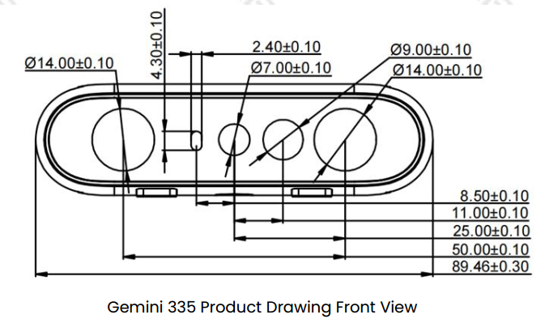

4.4. Coordinate Systems and TF Transforms
4.4.1. Camera sensor structure


4.4.2. TF from coordinate A to coordinate B:
In Orbbec cameras, the origin point (0,0,0) is taken from the camera_link position.
You can view the camera’s URDF model and coordinate system structure using the following command:
ros2 launch orbbec_description view_model.launch.py model:=gemini_335_336.urdf.xacro

4.4.3. ROS2 Robot Coordinate System vs Camera Optical Coordinate System
Point of View:
Imagine standing behind the camera and looking forward.
Always use this point of view when discussing coordinates, left vs right IR, sensor positions, etc.

ROS2 Coordinate System: (X: Forward, Y: Left, Z: Up)
Camera Optical Coordinate System: (X: Right, Y: Down, Z: Forward)
All data published in the wrapper topics is optical data taken directly from the camera sensors.
Static and dynamic TF topics publish optical and ROS coordinate systems so users can transform between them.
4.4.4. Using ROS2 TF Tools
4.4.4.1. View TF Tree Structure
Use the following ROS2 commands to print and visualize the TF tree published by the camera package:
Print all TF relationships:
ros2 run tf2_tools view_frames
This command generates a frames.pdf file showing the hierarchy between all frames.

View all currently published TF information:
ros2 topic echo /tf_static
View the TF transform between two specified frames:
Use the following command to view the transform between two specific frames:
ros2 run tf2_ros tf2_echo [source_frame] [target_frame]
Example, view transform from camera_link to camera_depth_optical_frame:
ros2 run tf2_ros tf2_echo camera_link camera_depth_optical_frame
The command continuously outputs the real-time transform between the two frames, including:
Translation: x, y, z (meters)
Rotation (Quaternion): x, y, z, w
Rotation (RPY): roll, pitch, yaw (radians and degrees)
Transform Matrix: 4×4 matrix with rotation and translation
Sample output:
At time 0.0
- Translation: [0.000, 0.000, 0.000]
- Rotation: in Quaternion [-0.500, 0.500, -0.500, 0.500]
- Rotation: in RPY (radian) [-1.571, -0.000, -1.571]
- Rotation: in RPY (degree) [-90.000, -0.000, -90.000]
- Matrix:
0.000 0.000 1.000 0.000
-1.000 0.000 0.000 0.000
0.000 -1.000 0.000 0.000
0.000 0.000 0.000 1.000
4.4.4.2. Visualize TF Tree in rviz2
Use rviz2 to visualize the TF tree and relative frame poses in real time:
rviz2
In rviz2:
Add the
TFdisplay pluginSet the Fixed Frame to
camera_linkorcamera_depth_optical_frameSelect which TF frames to display

4.4.5. Camera TF Calculation and Publishing Mechanism
4.4.5.1. Core Function: OBCameraNode::calcAndPublishStaticTransform()
The camera node uses this function to calculate and publish all static transforms between sensors.
void OBCameraNode::calcAndPublishStaticTransform() {
tf2::Quaternion quaternion_optical, zero_rot;
zero_rot.setRPY(0.0, 0.0, 0.0);
quaternion_optical.setRPY(-M_PI / 2, 0.0, -M_PI / 2);
tf2::Vector3 zero_trans(0, 0, 0);
auto base_stream_profile = stream_profile_[base_stream_];
auto device_info = device_->getDeviceInfo();
CHECK_NOTNULL(device_info);
auto pid = device_info->getPid();
if (!base_stream_profile) {
RCLCPP_ERROR_STREAM(logger_, "Failed to get base stream profile");
return;
}
CHECK_NOTNULL(base_stream_profile.get());
for (const auto &item : stream_profile_) {
auto stream_index = item.first;
auto stream_profile = item.second;
if (!stream_profile) {
continue;
}
OBExtrinsic ex;
try {
ex = stream_profile->getExtrinsicTo(base_stream_profile);
} catch (const ob::Error &e) {
RCLCPP_ERROR_STREAM(logger_, "Failed to get " << stream_name_[stream_index]
<< " extrinsic: " << e.getMessage());
ex = OBExtrinsic({{1, 0, 0, 0, 1, 0, 0, 0, 1}, {0, 0, 0}});
}
auto Q = rotationMatrixToQuaternion(ex.rot);
Q = quaternion_optical * Q * quaternion_optical.inverse();
tf2::Vector3 trans(ex.trans[0], ex.trans[1], ex.trans[2]);
auto timestamp = node_->now();
if (stream_index.first != base_stream_.first) {
if (stream_index.first == OB_STREAM_IR_RIGHT && base_stream_.first == OB_STREAM_DEPTH) {
trans[0] = std::abs(trans[0]); // because left and right ir calibration is error
}
publishStaticTF(timestamp, trans, Q, frame_id_[base_stream_], frame_id_[stream_index]);
}
publishStaticTF(timestamp, zero_trans, quaternion_optical, frame_id_[stream_index],
optical_frame_id_[stream_index]);
RCLCPP_INFO_STREAM(logger_, "Publishing static transform from " << stream_name_[stream_index]
<< " to "
<< stream_name_[base_stream_]);
RCLCPP_INFO_STREAM(logger_, "Translation " << trans[0] << ", " << trans[1] << ", " << trans[2]);
RCLCPP_INFO_STREAM(logger_, "Rotation " << Q.getX() << ", " << Q.getY() << ", " << Q.getZ()
<< ", " << Q.getW());
}
if ((pid == FEMTO_BOLT_PID || pid == FEMTO_MEGA_PID) && enable_stream_[DEPTH] &&
enable_stream_[COLOR] && enable_publish_extrinsic_) {
// calc depth to color
CHECK_NOTNULL(stream_profile_[COLOR]);
auto depth_to_color_extrinsics = base_stream_profile->getExtrinsicTo(stream_profile_[COLOR]);
auto Q = rotationMatrixToQuaternion(depth_to_color_extrinsics.rot);
Q = quaternion_optical * Q * quaternion_optical.inverse();
publishStaticTF(node_->now(), zero_trans, Q, camera_link_frame_id_, frame_id_[base_stream_]);
} else {
publishStaticTF(node_->now(), zero_trans, zero_rot, camera_link_frame_id_,
frame_id_[base_stream_]);
}
if (enable_stream_[DEPTH] && enable_stream_[COLOR] && enable_publish_extrinsic_) {
static const char *frame_id = "depth_to_color_extrinsics";
OBExtrinsic ex;
try {
ex = base_stream_profile->getExtrinsicTo(stream_profile_[COLOR]);
} catch (const ob::Error &e) {
RCLCPP_ERROR_STREAM(logger_,
"Failed to get " << frame_id << " extrinsic: " << e.getMessage());
ex = OBExtrinsic({{1, 0, 0, 0, 1, 0, 0, 0, 1}, {0, 0, 0}});
}
depth_to_other_extrinsics_[COLOR] = ex;
auto ex_msg = obExtrinsicsToMsg(ex, frame_id);
CHECK_NOTNULL(depth_to_other_extrinsics_publishers_[COLOR]);
depth_to_other_extrinsics_publishers_[COLOR]->publish(ex_msg);
}
if (enable_stream_[DEPTH] && enable_stream_[INFRA0] && enable_publish_extrinsic_) {
static const char *frame_id = "depth_to_ir_extrinsics";
OBExtrinsic ex;
try {
ex = base_stream_profile->getExtrinsicTo(stream_profile_[INFRA0]);
} catch (const ob::Error &e) {
RCLCPP_ERROR_STREAM(logger_,
"Failed to get " << frame_id << " extrinsic: " << e.getMessage());
ex = OBExtrinsic({{1, 0, 0, 0, 1, 0, 0, 0, 1}, {0, 0, 0}});
}
depth_to_other_extrinsics_[INFRA0] = ex;
auto ex_msg = obExtrinsicsToMsg(ex, frame_id);
CHECK_NOTNULL(depth_to_other_extrinsics_publishers_[INFRA0]);
depth_to_other_extrinsics_publishers_[INFRA0]->publish(ex_msg);
}
if (enable_stream_[DEPTH] && enable_stream_[INFRA1] && enable_publish_extrinsic_) {
static const char *frame_id = "depth_to_left_ir_extrinsics";
OBExtrinsic ex;
try {
ex = base_stream_profile->getExtrinsicTo(stream_profile_[INFRA1]);
} catch (const ob::Error &e) {
RCLCPP_ERROR_STREAM(logger_,
"Failed to get " << frame_id << " extrinsic: " << e.getMessage());
ex = OBExtrinsic({{1, 0, 0, 0, 1, 0, 0, 0, 1}, {0, 0, 0}});
}
depth_to_other_extrinsics_[INFRA1] = ex;
auto ex_msg = obExtrinsicsToMsg(ex, frame_id);
CHECK_NOTNULL(depth_to_other_extrinsics_publishers_[INFRA1]);
depth_to_other_extrinsics_publishers_[INFRA1]->publish(ex_msg);
}
if (enable_stream_[DEPTH] && enable_stream_[INFRA2] && enable_publish_extrinsic_) {
static const char *frame_id = "depth_to_right_ir_extrinsics";
OBExtrinsic ex;
try {
ex = base_stream_profile->getExtrinsicTo(stream_profile_[INFRA2]);
} catch (const ob::Error &e) {
RCLCPP_ERROR_STREAM(logger_,
"Failed to get " << frame_id << " extrinsic: " << e.getMessage());
ex = OBExtrinsic({{1, 0, 0, 0, 1, 0, 0, 0, 1}, {0, 0, 0}});
}
ex.trans[0] = -std::abs(ex.trans[0]);
depth_to_other_extrinsics_[INFRA2] = ex;
auto ex_msg = obExtrinsicsToMsg(ex, frame_id);
CHECK_NOTNULL(depth_to_other_extrinsics_publishers_[INFRA2]);
depth_to_other_extrinsics_publishers_[INFRA2]->publish(ex_msg);
}
if (enable_stream_[DEPTH] && enable_stream_[ACCEL] && enable_publish_extrinsic_) {
static const char *frame_id = "depth_to_accel_extrinsics";
OBExtrinsic ex;
try {
ex = base_stream_profile->getExtrinsicTo(stream_profile_[ACCEL]);
} catch (const ob::Error &e) {
RCLCPP_ERROR_STREAM(logger_,
"Failed to get " << frame_id << " extrinsic: " << e.getMessage());
ex = OBExtrinsic({{1, 0, 0, 0, 1, 0, 0, 0, 1}, {0, 0, 0}});
}
depth_to_other_extrinsics_[ACCEL] = ex;
auto ex_msg = obExtrinsicsToMsg(ex, frame_id);
CHECK_NOTNULL(depth_to_other_extrinsics_publishers_[ACCEL]);
depth_to_other_extrinsics_publishers_[ACCEL]->publish(ex_msg);
}
if (enable_stream_[DEPTH] && enable_stream_[GYRO] && enable_publish_extrinsic_) {
static const char *frame_id = "depth_to_gyro_extrinsics";
OBExtrinsic ex;
try {
ex = base_stream_profile->getExtrinsicTo(stream_profile_[GYRO]);
} catch (const ob::Error &e) {
RCLCPP_ERROR_STREAM(logger_,
"Failed to get " << frame_id << " extrinsic: " << e.getMessage());
ex = OBExtrinsic({{1, 0, 0, 0, 1, 0, 0, 0, 1}, {0, 0, 0}});
}
depth_to_other_extrinsics_[GYRO] = ex;
auto ex_msg = obExtrinsicsToMsg(ex, frame_id);
CHECK_NOTNULL(depth_to_other_extrinsics_publishers_[GYRO]);
depth_to_other_extrinsics_publishers_[GYRO]->publish(ex_msg);
}
if (enable_sync_output_accel_gyro_) {
tf2::Quaternion zero_rot;
zero_rot.setRPY(0.0, 0.0, 0.0);
tf2::Vector3 zero_trans(0, 0, 0);
publishStaticTF(node_->now(), zero_trans, zero_rot, optical_frame_id_[GYRO],
accel_gyro_frame_id_);
}
}
4.4.5.2. Function Breakdown
Detailed explanation of the code:
Quaternion Initialization and Coordinate Transform
tf2::Quaternion quaternion_optical, zero_rot;
zero_rot.setRPY(0.0, 0.0, 0.0);
quaternion_optical.setRPY(-M_PI / 2, 0.0, -M_PI / 2);
quaternion_optical: Defines the rotation from optical coordinates to ROS standard (90° rotation)Converts camera optical CS (X right, Y down, Z forward) to ROS CS (X forward, Y left, Z up)
Get Device Info and Base Stream
auto base_stream_profile = stream_profile_[base_stream_];
auto device_info = device_->getDeviceInfo();
// Base stream usually DEPTH
Choose a base stream (usually depth); all other transforms are relative to it
Iterate Streams and Compute Relative Transforms
for (const auto &item : stream_profile_) {
auto stream_index = item.first;
auto stream_profile = item.second;
OBExtrinsic ex;
ex = stream_profile->getExtrinsicTo(base_stream_profile);
auto Q = rotationMatrixToQuaternion(ex.rot);
Q = quaternion_optical * Q * quaternion_optical.inverse();
tf2::Vector3 trans(ex.trans[0], ex.trans[1], ex.trans[2]);
OBExtrinsicholds rotation matrix (rot) and translation vector (trans)Apply optical-to-ROS rotation via quaternion multiplication
Publish TF Transforms
publishStaticTF(timestamp, trans, Q, frame_id_[base_stream_], frame_id_[stream_index]);
publishStaticTF(timestamp, zero_trans, quaternion_optical, frame_id_[stream_index],
optical_frame_id_[stream_index]);
First: base stream to sensor (translation + rotation)
Second: sensor frame to optical frame (pure rotation)
Special Handling for Left/Right IR
if (stream_index.first == OB_STREAM_IR_RIGHT && base_stream_.first == OB_STREAM_DEPTH) {
trans[0] = std::abs(trans[0]);
}
Ensures symmetry consistency between left/right IR cameras
Publish Depth-to-Other Extrinsics
if (enable_stream_[DEPTH] && enable_stream_[COLOR] && enable_publish_extrinsic_) {
OBExtrinsic ex = base_stream_profile->getExtrinsicTo(stream_profile_[COLOR]);
auto ex_msg = obExtrinsicsToMsg(ex, "depth_to_color_extrinsics");
depth_to_other_extrinsics_publishers_[COLOR]->publish(ex_msg);
}
Publishes raw extrinsics via topic for advanced alignment and registration